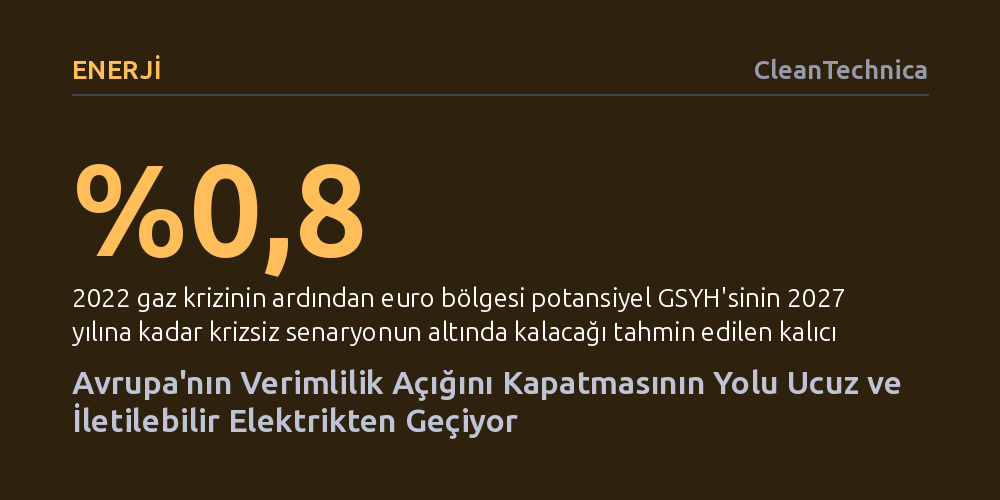

ENERJI · CleanTechnica · 2026-09-08
Avrupa'nın kronik verimlilik açığını kapatması, elektrifikasyonu bir iklim maliyeti değil, sanayiye ucuz iletilen dayanıklı bir sermaye yatırımı olarak görmesine bağlıdır. Fosil yakıt ithalatı sermayeyi eritirken, sınır ötesi ucuz elektrik altyapısı üretim maliyetlerini düşürüp otomasyonu hızlandırabilir.
Elektrifikasyonun salt bir çevre politikası veya maliyet yükü değil, fosil yakıt bağımlılığını kırarak sanayide verimlilik ve rekabet gücü kazandıran temel bir ekonomik kaldıraç olduğunu gösterir.

Son yıllarda küresel enerji piyasalarında yaşanan iki büyük sarsıntı, ülkelerin sermaye yapılarının krizlere nasıl tepki verdiğini çarpıcı biçimde ortaya koydu. Hürmüz Boğazı'nda baş gösteren gerilim sırasında Çin'in genel petrol tüketimi yaklaşık yüzde 9, taşımacılıkta kullandığı petrol ise yaklaşık yüzde 16 geriledi. Buna karşın ülkede kara yolu taşımacılığı, yük trafiği ve demir yolu taşımacılığı büyümeyi sürdürdü. Kuşkusuz bu düşüşün tamamı elektrifikasyondan kaynaklanmıyordu; inşaat sektöründeki yavaşlama, stok hareketleri ve havacılığın payı vardı. Ancak asıl farkı yaratan, mevcut elektrikli araç ve kamyon stoğunun sağladığı iktisadi uyum esnekliği oldu. Petrol odaklı bir sistemin kilitleneceği yerde, elektrikli altyapı çarkların dönmesini sağladı.
Avrupa ise 2022 yılındaki doğal gaz şokunda bu tecrübenin tam tersini yaşadı. Uluslararası Para Fonu'nun (IMF) araştırmasına göre, bu enerji krizi euro bölgesinin potansiyel milli gelirini 2027 yılına kadar krizsiz senaryonun yüzde 0,8 altında bırakacak bir iz bıraktı. Avrupalı sanayiciler akılcı bir refleksle sermayelerini, yönetim kapasitelerini ve inovasyon bütçelerini acilen enerjiyi daha az harcamaya kaydırdı; enerji üretkenliği kağıt üzerinde yüzde 3 kadar arttı. Fakat bu zorunlu hamle, şirketlerin asıl üretim ve verimlilik yatırımlarından feragat etmesi anlamına geliyordu. Enerji fiyatları kriz seviyelerinden gerilese de kaybedilen üretkenliğin faturası masada kaldı.
Avrupa'nın ekonomi çevrelerinde elektrifikasyon tartışılırken çoğunlukla gözden kaçırılan temel bir iktisadi mantık bulunuyor. Fosil yakıtlara dayalı bir ekonomi, kullandığı enerjiyi her gün yeniden satın almak zorundadır; petrol ve gaz çıkarılır, taşınır, bir kez yakılarak tüketilir ve ardından yeni bir sevkiyat için tekrar ödeme yapılır. Oysa elektrifikasyon, harcamaları tek seferlik yakıt ithalatından çıkarıp dayanıklı ve üretken bir sermaye stoğuna dönüştürür. Rüzgar türbinleri, iletim hatları, bataryalar, ısı pompaları ve güç elektroniği ilk kurulumda ciddi sermaye ve bakım gerektirse de yarının güneşi ya da rüzgarı için sınır dışındaki bir yakıt ihracatçısına her sabah yeni bir havale çıkarılmaz.
Bunun ötesinde elektrik sistemleri fiziksel olarak içten yanmalı sistemlerden katbekat üstün bir dönüşüm verimine sahiptir. Elektrik motorları ve ısı pompaları, kendilerine verilen enerjiyi mekanik işe ya da ısıya çevirirken fosil sistemlere göre çok daha az kayıp verir. Dahası, elektrikli donanımlar yazılımlar, sensörler ve otomasyon süreçleriyle doğrudan uyumludur. Avrupa gibi nüfusu hızla yaşlanan ve iş gücünün giderek kıtlaştığı bir kıtada, robotik sistemlerin ve otomasyonun çalışabilmesi için ucuz ve güvenilir elektrik akışı vazgeçilmez bir ön şarttır.
Avrupa enerji politikasındaki en tehlikeli yanılgılardan biri, tarladaki rüzgar türbininde üretilen ucuz elektriği, fabrikanın kapısına gelen nihai elektrikle karıştırmaktır. Uluslararası Enerji Ajansı'nın (IEA) fiyat analizleri, Avrupa'daki enerji yoğun ağır sanayi kollarının 2025 yılında hâlâ ABD'deki rakiplerinin yaklaşık iki katı, Çinli üreticilerin ise yaklaşık yüzde 50 üzerinde elektrik faturası ödediğini ortaya koyuyor. Bu makas alüminyum, kimya, gübre, çelik, cam ve kağıt gibi doğrudan enerjiyle şekillenen dev sektörler için ölüm kalım meselesidir.
Asıl altyapı darboğazı, düşük maliyetli elektronların ihtiyaç duyulan fabrikalara kesintisiz biçimde ulaştırılmasında düğümleniyor. Şebeke iletim kapasitesi, sınır ötesi ara bağlantılar, büyük ölçekli depolama sistemleri ve esnek talep mekanizmaları çözülmeden ucuz üretim bir ekonomik avantaja dönüşemez. Her ülkenin kendi sınırları içinde kendi enerji portföyünü sıfırdan kurmaya çalışması yerine Fransa'nın nükleer gücünün, İskandinavya'nın hidroelektriğinin, İberya'nın güneşinin ve Kuzey Denizi'nin rüzgarının sınır tanımadan akabilmesi gerekir. Stratejik bağımsızlık tek başına içine kapanmak değil, akıllı bir şebeke bağımlılığı kurmaktır.
Ucuz elektrik Avrupa'nın üretkenlik sorununa tek başına bir sihirli değnek olamaz. Kıtanın ortak pazar reformlarına, derinleşmiş sermaye piyasalarına, Ar-Ge çıktılarının hızla ticarileştirilmesine ve küresel ölçekte büyüyecek şirketler yaratmaya acilen ihtiyacı var. Ancak bunların hiçbiri, temel enerji maliyetlerindeki ezici dezavantajı tek başına telafi etmeye yetmez.
Avrupa, yakıt ihtiyacının büyük kısmını ithal eden yaşlı bir kıta olarak, elektrifikasyonu sadece katlanılması gereken bir "iklim maliyeti" olarak görmeyi bırakmalıdır. Rekabetçi fiyatlarla sunulan bol ve iletilebilir elektrik; enerji üretkenliğini artırmanın, sanayide otomasyonu yaygınlaştırmanın ve dış şoklara karşı bağışıklık kazanmanın temel zeminidir. Ucuz elektrik verimlilik stratejisinin tamamı olmasa da üzerine sağlam bir bina inşa edilebilecek en kritik temel taşıdır.